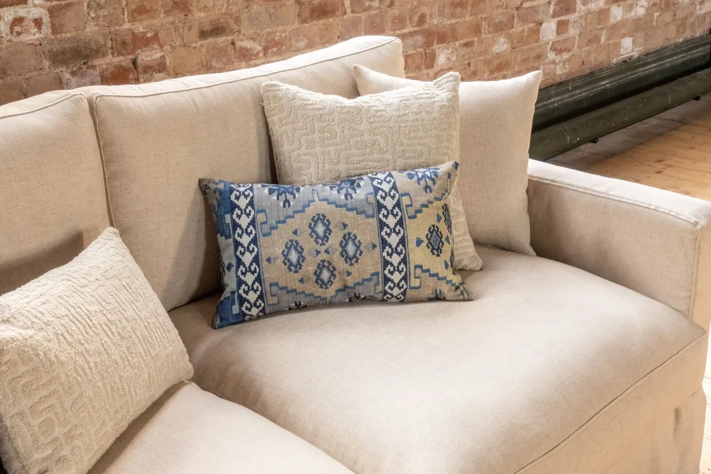
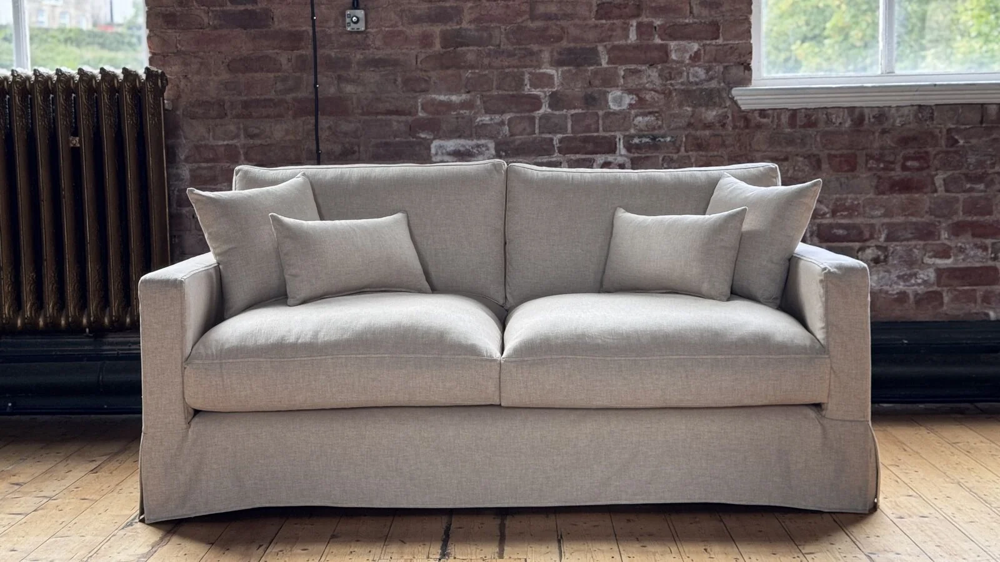
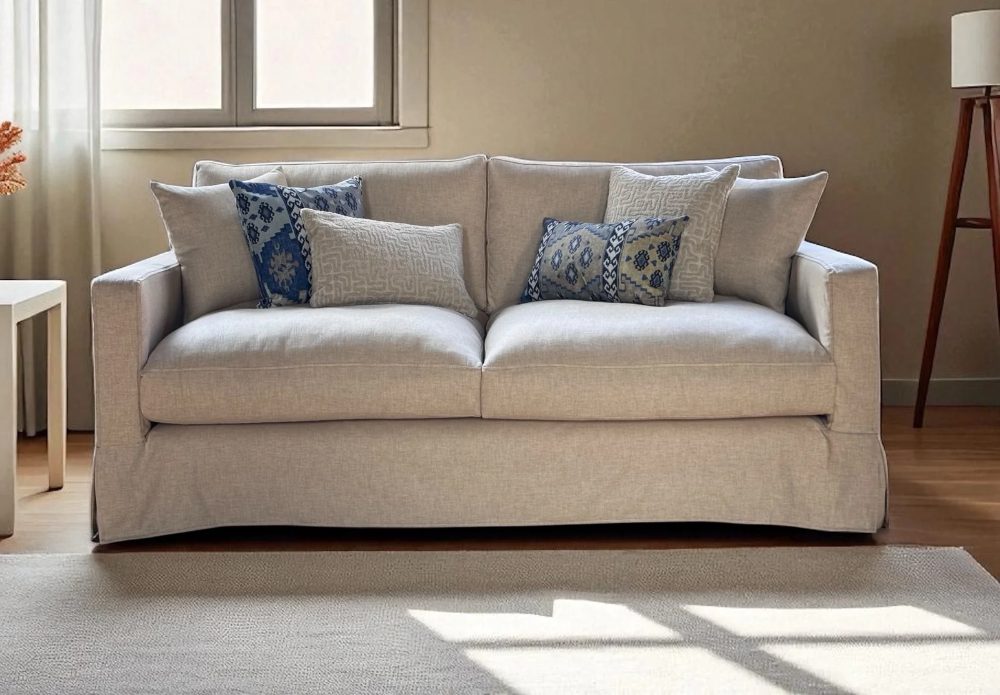
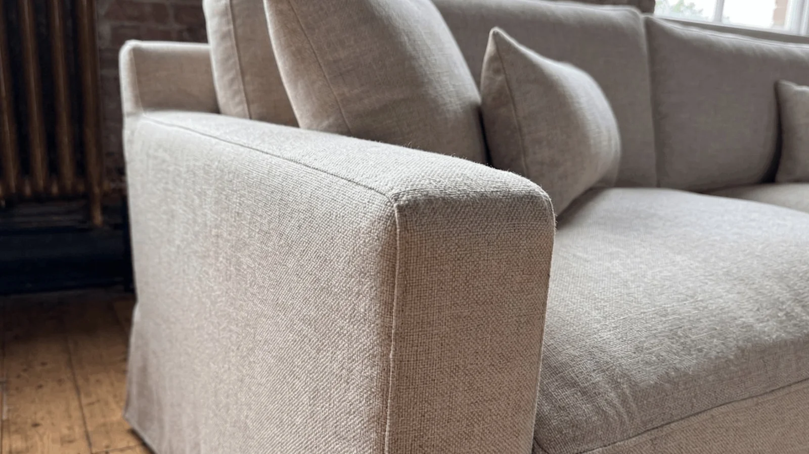
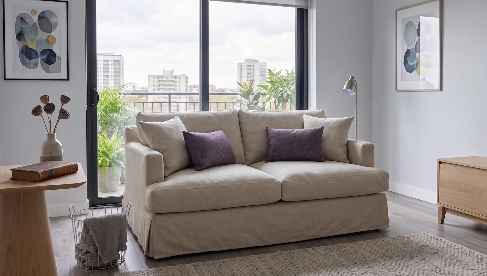
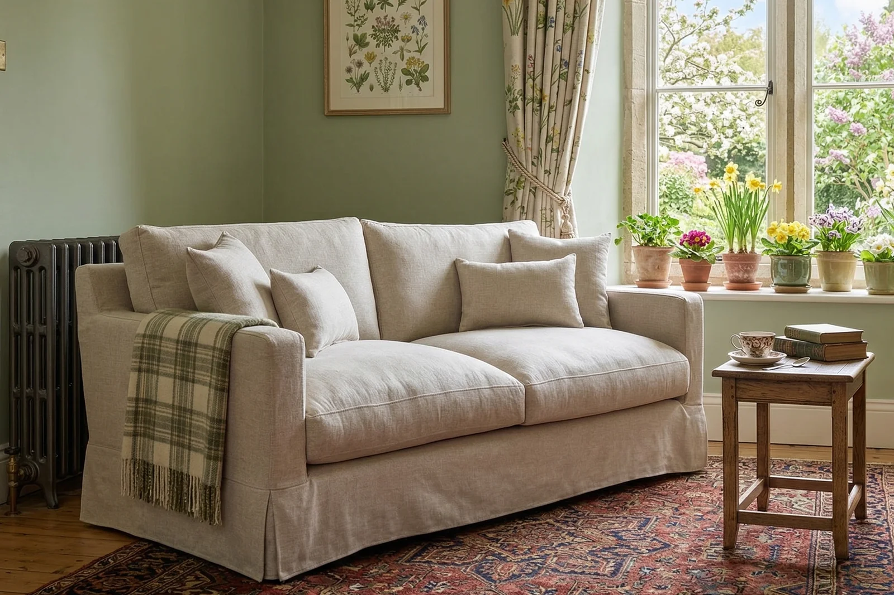

Alder
An easy shape for everyday living.
Sofas from £1,945Armchairs from £1,545Eligible mainland delivery included







Your selected furniture
3 seater · Cambridge Linen
Delivery included*
Delivery included to serviceable Great Britain mainland addresses. Islands and some AB, IV and PA locations need a separate quote. Check delivery coverage.
The sofa images show example upholstery. The fabric swatches show the selected material and colour; screen appearance can vary, so ask about physical samples before choosing.
Alder brings a light, unfussy outline to a deeper, relaxed seat. Slim arms frame foam-wrapped seat cushions and fibre-filled backs, while the removable cover gives this Cambridge Linen design an easy-going character.
Need help choosing? Ask us about Alder.
Estimated production: 6–8 weeks, followed by 1–2 weeks for delivery. Timing depends on material availability and is confirmed for your order. Delivery and aftercare details.
Every size. Every fabric.
Total consumer prices below include delivery to serviceable Great Britain mainland addresses. Colour choices within each fabric collection share the same price.
| Size | Cambridge Linen |
|---|---|
| Armchair | £1,545 |
| Love seat | £1,645 |
| 2 seater | £1,945 |
| 3 seater | £2,045 |
| 4 seater | £2,195 |
Delivery included to serviceable Great Britain mainland addresses. Islands and some AB, IV and PA locations need a separate quote. Delivery access and material availability are checked before your order is accepted. Delivery details.
Alder, in five sizes.
All measurements below are in centimetres. Check your room, doorways, stairs and delivery access against the final specification before ordering.
| Size | Width | Depth | Height | Seat width | Seat height | Seat depth |
|---|---|---|---|---|---|---|
| Armchair | 85 | 100 | 90 | 61 | 45 | 70 |
| Love seat | 105 | 100 | 90 | 81 | 45 | 70 |
| 2 seater | 145 | 100 | 90 | 121 | 45 | 70 |
| 3 seater | 185 | 100 | 90 | 161 | 45 | 70 |
| 4 seater | 205 | 100 | 90 | 181 | 45 | 70 |
Handmade upholstery can vary slightly. Ask us to confirm the dimensions and access requirements for your chosen configuration.
Made with care.
Care for your Alder
The cover is removable and washable. Follow the fabric care label supplied with your furniture before washing. Plump and rotate loose cushions regularly.
Commercial projects
Cambridge Linen is not suitable for commercial use. For a commercial project, explore our trade service and ask about suitable alternative upholstery.
Explore TradeStructural guarantee
The manufacturer provides a five-year structural and manufacturing guarantee covering the frame, springing and webbing, subject to its terms. Normal wear and damage from misuse or neglect are excluded. We confirm the applicable coverage and claims process before your order is accepted.
Read about delivery and aftercareMake it yours.
Ready to make it yours? Tell us about your space and preferred upholstery. We will help you choose the right specification and confirm your delivery details.
Request advice